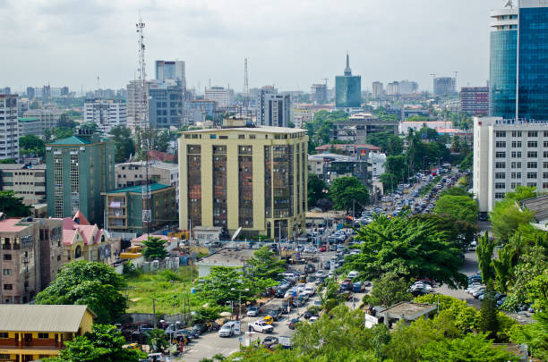
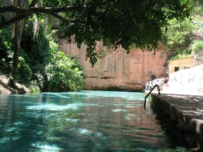
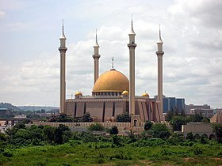
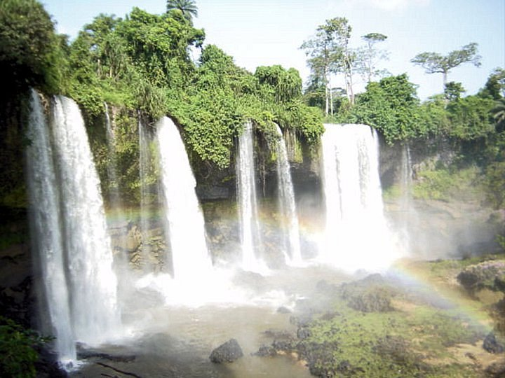
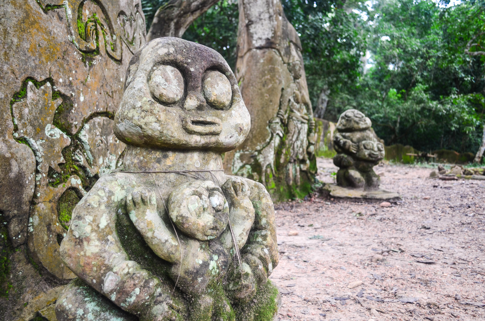
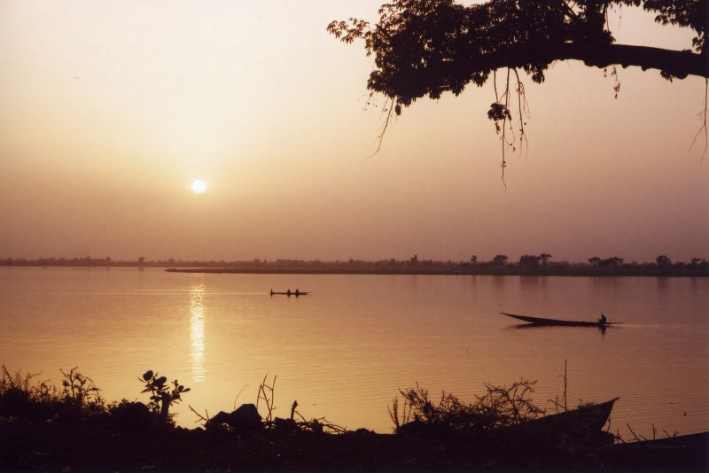
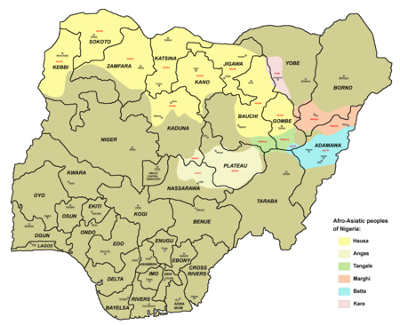

Descripcion del pais
Nigeria, oficialmente conocida como la República Federal de Nigeria, es el país más poblado de África y la séptima nación más poblada del mundo. Su capital es Abuja, mientras que Lagos es la ciudad más grande y un importante centro económico. Nigeria está ubicada en África Occidental y limita con Benín, Chad, Camerún y Níger, además de tener una extensa costa en el Golfo de Guinea. El país es conocido por su diversidad étnica y cultural, con más de 250 grupos étnicos, siendo los más grandes los hauza, yoruba e igbo. Nigeria tiene una economía en crecimiento, impulsada principalmente por la producción de petróleo, y es también famosa por su vibrante industria cinematográfica, Nollywood. El idioma oficial es el inglés, lo que facilita la comunicación en un país tan diverso.
5 lugares para ir de vacaciones
1. Lagos
Lagos, la ciudad más grande de Nigeria, es un vibrante centro de cultura y entretenimiento. Conocida por sus playas animadas como Tarkwa Bay y Elegushi Beach, Lagos también ofrece una vida nocturna vibrante y una rica escena musical. El Museo Nacional de Lagos alberga una impresionante colección de artefactos nigerianos, mientras que el mercado de Lekki es ideal para comprar artesanías locales. La ciudad es también el corazón de Nollywood, la próspera industria cinematográfica de Nigeria.
2. Parque Nacional Yankari
El Parque Nacional Yankari es uno de los principales destinos de safari en Nigeria. Ubicado en el estado de Bauchi, el parque es famoso por su abundante vida silvestre, incluyendo elefantes, búfalos y antílopes. Los visitantes pueden explorar las numerosas fuentes termales, siendo la más conocida Wikki Warm Spring, con sus aguas cristalinas y cálidas. El parque también ofrece rutas de senderismo y oportunidades para la observación de aves, haciendo de Yankari un destino perfecto para los amantes de la naturaleza.
3. Abuya
Abuya, la capital de Nigeria, es una ciudad moderna y bien planificada. Entre sus atracciones principales se encuentra la Mezquita Nacional de Abuya, un impresionante edificio con una cúpula dorada. El Centro Comercial Jabi Lake ofrece tiendas, restaurantes y actividades recreativas junto al lago. El Parque de Milenio es ideal para paseos tranquilos y picnics, y la Roca Zuma, una formación rocosa imponente, es perfecta para los excursionistas y ofrece vistas panorámicas de la ciudad.
4. Calabar
Calabar, situada en el sureste de Nigeria, es conocida por su rica historia y cultura. El Museo Nacional de Calabar ofrece una visión de la historia colonial y la trata de esclavos en la región. La ciudad es también famosa por su Carnaval de Calabar, considerado el mayor festival de África, que presenta desfiles coloridos, música y danza. Los visitantes pueden disfrutar de paseos en barco por el río Calabar y explorar la Reserva de la Vida Silvestre de Drill Ranch, que alberga primates en peligro de extinción.
5. Oshogbo
Oshogbo es famosa por el Bosque Sagrado de Osun-Osogbo, un sitio del Patrimonio Mundial de la UNESCO. Este bosque es un centro espiritual y cultural de los yoruba, y alberga numerosos santuarios y esculturas dedicados a la diosa Osun. El festival anual de Osun-Osogbo atrae a miles de peregrinos y turistas que vienen a participar en ceremonias religiosas y celebrar la cultura yoruba. La ciudad también cuenta con el Museo de Arte de Nike, que exhibe arte contemporáneo nigeriano.
Datos curiosos
1. La industria cinematográfica Nollywood
Nollywood es la segunda mayor industria cinematográfica del mundo en términos de volumen, solo superada por Bollywood de la India. Cada año, Nollywood produce más de 1,000 películas que se distribuyen y venden en toda África y más allá. Las películas nigerianas son conocidas por su creatividad y la capacidad de contar historias que resuenan con la audiencia local y global, a menudo abordando temas sociales y culturales.
2. El río más largo de Nigeria
El río Níger es el río más largo de Nigeria y el tercero más largo de África, con una longitud de aproximadamente 4,180 kilómetros. Este río es vital para la agricultura, el transporte y la vida diaria de millones de nigerianos. El delta del Níger es una región rica en biodiversidad y recursos naturales, incluyendo vastos depósitos de petróleo, lo que lo convierte en una zona de gran importancia económica y ecológica.
3. Diversidad lingüística y cultural
Nigeria es uno de los países más diversos del mundo, con más de 500 idiomas hablados en su territorio. Los tres grupos étnicos más grandes son los hauza, los yoruba y los igbo, pero hay numerosos otros grupos que contribuyen a la rica tapeztería cultural del país. Esta diversidad se refleja en la música, la danza, las festividades y la gastronomía de Nigeria, haciendo del país un mosaico de culturas vibrantes y dinámicas.
Quiz
¡Prueba tus conocimientos con este Quiz!
Gracias por participar
Tu puntaje fue: